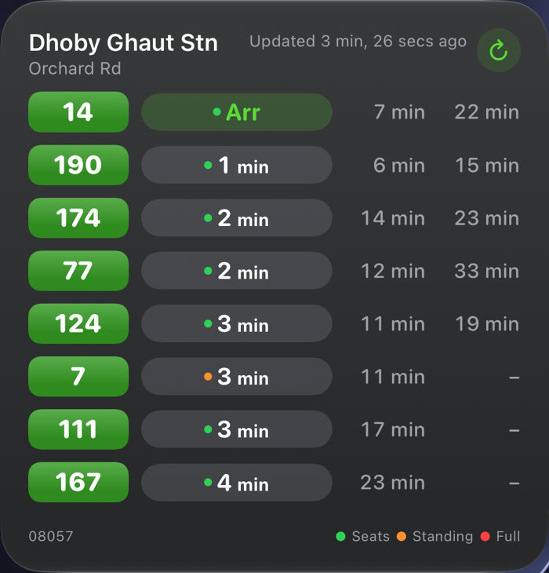
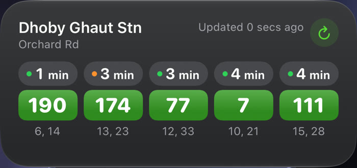
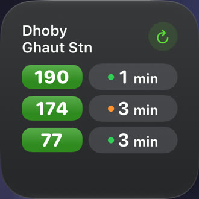
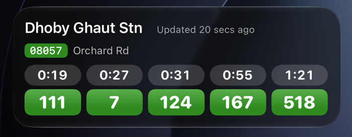

Singapore bus timings & MRT
Live arrival times for every bus stop in Singapore. Know when to leave, see where your bus is, and plan the trip by just asking.
A better everyday commute
Live arrivals
Nearby stops are on the first screen. Tap one for the next three buses of every service, then tap a bus to see where it is on the map.
Read the guide →Home Screen widgets New in 2.1
Small, medium or large, each on the favourite stop you choose, or the one nearest you. Tap ↻ for fresh times; tap the widget to open your favourites.
Read the guide →Lock Screen & Dynamic Island New in 2.1
Open a stop and tap 🔒. The next five buses count down on the Lock Screen and in the Dynamic Island while you get ready, even with GoSG closed.
Read the guide →Leave-now alerts
Pick your bus and your usual times. GoSG tells you when it's time to leave, so you're not waiting at the stop.
Ask
“How do I get to VivoCity?” “Last 52 tonight?” Get the buses, where to change and the time door to door. Or ask Siri.
Read the guide →Widgets New in 2.1
Pick the size that fits your Home Screen. Each widget can show a different favourite stop, only the buses you take, or follow you to the nearest favourite.




Privacy
No ads, and no account needed for bus times. Your favourites stay on your iPhone, and your location is used on the device to find stops near you. It isn't sent to us.
Android · beta
Live arrival times for nearby stops, favourites, search by bus number and the Causeway cameras, on Android. It's free, and anyone can join the test in three taps.
Join the tester groupThen join the test →
Questions: bestappsclub@gmail.com
Pick your stop on the bus map. GoSG nudges you 2 stops before, and again at the stop before yours.
Woodlands and Tuas checkpoint photos before you head to JB. How it works
Fastest train route with changes and time, worked out on your iPhone. No signal needed.
Favourite stops on your wrist, plus a complication for your next bus.
"When's my next bus?" "Track my bus." "Any traffic incidents near me?"
From LTA DataMall, the Land Transport Authority's official data, for SBS Transit, SMRT, Tower Transit and Go-Ahead buses.
Every few seconds while a stop is open. Times are estimates, so they can jump when a bus speeds up or gets stuck in traffic.
Yes for live times. Your favourites and the stop list stay on your phone.
Times are LTA's live estimates. They move when a bus speeds up, gets held at a stop, or hits traffic. Open the bus map to see where the bus actually is.
Yes, with no ads. From GoSG 2.1 there is no paid tier: live times, widgets, the Lock Screen, the Apple Watch app, the MRT planner and up to 10 leave-now alerts are free. In Ask, on-device AI (iPhones with Apple Intelligence) is free and unlimited; cloud AI answers need a free sign-in with Apple or Google and are limited to 10 a month.
No. Bus times, widgets, alerts and the map work without one. Only cloud AI answers in Ask need a free sign-in with Apple or Google.
iPhone and iPad with iOS 17 or later, and Macs with Apple silicon. English, 简体中文, 繁體中文, Bahasa Melayu, தமிழ் and हिन्दी.
Yes, from GoSG 2.1. Your favourite stops and starred buses appear on the watch, and it fetches live times on its own. There is also a watch face complication for your next bus.
Yes, from GoSG 2.1. MRT › Plan works out the fastest train route on your iPhone, with changes and time, even underground.
Yes, in testing on Google Play. Join the tester group from the Android section of this page, then join the test and install from Google Play.
Use Settings › Send feedback in the app, or email bestappsclub@gmail.com.